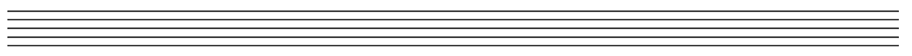
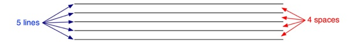
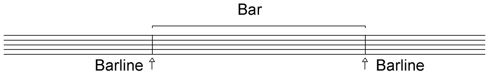
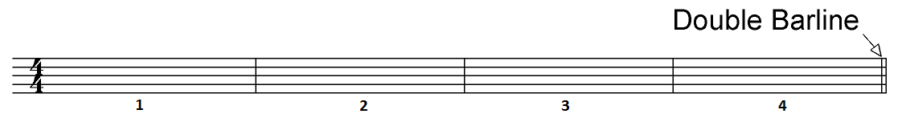

Stave
Notes and rests in music are written on what we call a musical stave (also called a staff). A stave is made up of five horizontal lines with four spaces between them.

Bars
A bar is a piece of written music contained within two barlines in a music stave.
Bars follow one another throughout a piece of music, and the first beat of each bar is usually played a little stronger.
Example:
This stave has been divided into four bars. It also ends with a double barline to show that it is the end of an important musical phrase.
